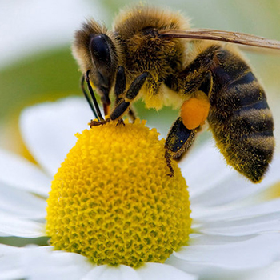

Etape 3 L'insecte est récompensé
- Grâce à la pollinisation, la reproduction sexuée des plantes est assurée. La pollinisation apporte aussi un avantage aux insectes : le nectar ou le pollen dont ils se nourrissent. La pollinisation est une relation mutualiste, c’est-à-dire que les deux partenaires y trouvent un avantage. Nectar et pollen sont parfois qualifiés de récompense pour appuyer sur le fait que les insectes aussi tirent bénéfice de la pollinisation. Le nectar n’a d’ailleurs pas d’autre fonction que d’attirer les insectes sur la fleur. Il est produit par des glandes appelées nectaires et que l’on peut rencontrer à différents endroits de la fleur.